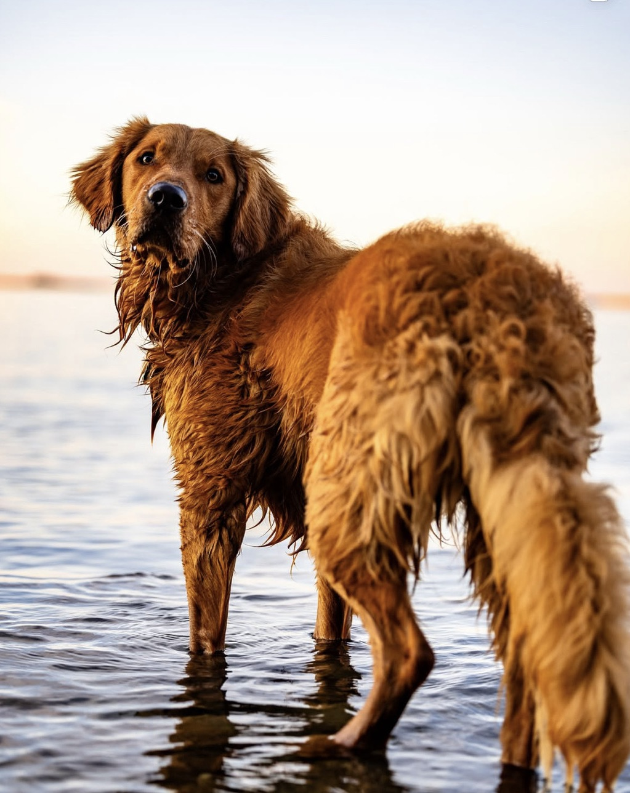

Episode 47 · March 28, 2026 · 1507
Introducing a dog to water & tips to get that dog swimming!

About This Episode
In this episode I talk about introducing a dog to water and some tips that might help to get your dog swimming. Thanks for listening! Introduce your dogs to guns and start them out right or help fix your gunshy dog using, "THE GUNSHY FIX" at
Questions about the training topics in this episode? Tyce works with bird dog owners and hunters through Utah Bird Dog Training. Reach out to work with him directly.
Resources & Links
- The Gunshy Fix — Sound conditioning program for gunshy dogs.
- Kuranda Dog Beds — Elevated, chew-proof dog beds.
- Utah Bird Dog Training — Tyce's professional training services.
Transcript
Full transcript for Episode 47: Introducing a dog to water & tips to get that dog swimming!.
Tyce
Hey everyone, welcome to the Bird Dog Podcast. My name is Tyce. Today I want to talk about introducing your dog to water — how to do it right, some tips for dogs that struggle to find their stroke, and why it matters even for pointing breeds.
Most retrievers and water-oriented breeds are going to take to water naturally. You get them in at a young age, they splash around, they get their head forward, their rear end drops down, and they start swimming. For most dogs it happens pretty quickly. But I've had dogs that would splash and thrash for an hour without settling into a real swim. The following tips are especially useful for those dogs — but they're good practice for any dog you're introducing to water for the first time.
Start warm and start shallow. Spring and early summer are ideal. You want water the dog can get in and out of comfortably, and you want the temperature to be inviting rather than shocking. Shallow water at first — just deep enough that the dog can't quite touch the bottom — gets them paddling without the panic of feeling like they're drowning. Let them ease in. Get in there with them if it helps. A puppy will follow you anywhere, and knee-deep water where they can't touch the bottom is usually enough to get them moving their legs and figuring it out. Puppies are naturally buoyant when young — they tend to find the stroke pretty quickly just from following you around.
For dogs that are struggling, one technique I've used successfully is to handle them in the water. If they have basic obedience and know the sit whistle, you can cast them out, let them thrash, and when they start to panic — blow the sit whistle. A dog that knows that command will often pause, slow down, and begin treading. In that moment of calm they start to feel the buoyancy, their muscle memory starts to kick in, and they begin swimming instead of fighting the water. I've used this on a couple of Labs that just could not find their stroke, and once they relaxed in the water they became excellent swimmers.
Watch the depth of the water carefully. If your dog can sense the bottom at all, it may try to hop or claw its way upright rather than swim flat. Make sure you're in water deep enough that there's no bottom to reach for. That forces the dog to actually swim.
If you want to accelerate the process of getting a dog to carry its rear end correctly, there's a trick I've used: tie two bumpers together and place them just behind the dog's hips in the pocket where the legs meet the stomach. The bumpers float and push the rear end up, putting the dog in a more natural horizontal position. It speeds up the muscle memory for getting into the correct swim posture. I've only needed this a handful of times, but it works.
Another option for getting serious swim time — especially for dogs that keep returning to shallow water and not getting enough sustained swimming — is to take them out on a boat or kayak, gently put them over the side (don't throw them), and just idle slowly away from them. Encourage them back to the boat. They have no choice but to swim, and they get real sustained practice. Obviously keep a close eye on the dog and be ready to come back around immediately if needed. This has worked well for me as a way to build the muscle memory without constantly throwing bumpers from shore and having the dog come back in after twenty feet.
Once a dog has the stroke, they'll swim better every time. Their brain and body build the pattern, and when they hit the water again they just go. You'll notice them becoming more efficient, carrying their head better, not splashing as much. It's a satisfying progression to watch.
A word on water-shy dogs: in my experience, this is much less permanent than gun shyness. If a dog had a bad experience — fell in a pool, got in over its head — you can almost always get them back to comfortable. Get in the water with them, go slow, rebuild positive associations. I have not come across a dog that was truly ruined with water the way a severely gun-shy dog can be ruined for hunting.
Finally — pointing breeds. You might not think about swimming your Shorthair or your Vizsla, but it's worth doing. If you're hunting birds around sloughs, ditch banks, or river edges, your dog may end up needing to retrieve across water at some point. A pointing dog that's comfortable swimming can go get that pheasant you dropped in the river. One that's never been in the water will watch it float away. You don't need them to be water dogs — just comfortable. Even getting them comfortable in moving water will help a lot.
Get them in this spring and summer while the water's warm. It's a fun step in your dog's development, and if you lay that positive foundation now, the dog will handle colder water and more demanding retrieves when the season comes around. Have a great one.
About the Host
Tyce Erickson
Tyce Erickson is a professional bird dog trainer and the owner of Utah Bird Dog Training in Utah. For nearly two decades he has worked with pointing dogs, retrievers, and family hunting dogs — helping owners build dogs that are capable and enjoyable in the field. The Bird Dog Podcast is an extension of that work: honest conversations on training, hunting, breeding, and everything that goes into a life spent working dogs.
More About Tyce